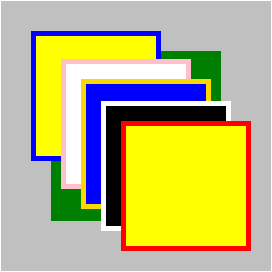

KB013: 分层的显示( Layered presentation )
层叠级别( Stack level )概述
在前面的文章中已将 CSS 核心布局基础讲解完毕。主要涉及到3种布局方式，既：常规流，浮动和绝对定位1。使用这 3 种定位方式， 可以把框放到任何需要的地方。
为了说明方便，我们把浏览器的可视窗口看作二维的坐标系，以左上角为原点。 假设两个元素分别形成了 "100px×100px" 的框，把 A 的左上角放到坐标为(100, 200)的地方，B 的左上角也放到坐标值是 (100, 200)的地方。 那么 A 和 B 哪个显示在前面，能被用户看到呢？
以上的问题就涉及到可视化格式模型的 3D 模型1了。需要确定 A 和 B 在 Z 轴上的位置，也就是确定它们所处的层哪个显示层级更靠上。
对于 A 和 B 在 Z 轴方向上所属的层的级别，或者叫层级，类似 Photoshop 中的图层顺序。CSS 中将他规范命名为：层叠级别(Stack level)。
注：
指定层叠级别：'z-index' 特性
| 值： | auto | <integer> | inherit |
| 初始值： | auto |
| 适用于 | 定位元素 |
| 可否继承 | 否 |
| 计算值 | 同设定值 |
'z-index' 特性值的意义
<integer>2
该整数是生成框在当前层叠上下文中的层叠级别。同时，该框也会生成一个局部层叠上下文，在其中它的层叠级别是 '0'。
注2：此处的 integer 等同于 C 中数据类型 int 的取值范围，从 -2^31 (-2,147,483,648) 到 2^31 - 1 (2,147,483,647) 的整型数据。
auto
生成框在当前层叠上下文中的层叠级别和它的父框相同。该框不生成新的局部层叠上下文。
'z-index' 作用
对于一个定位框，'z-index' 特属性指定了：
- 框在当前层叠上下文中的层叠级别。
- 框是否生成局部层叠上下文。
层叠规则
层叠规则，就是解决框在 Z 轴方向上谁前谁后的问题。大致来讲，就是层叠级别高的遮住层叠级别低的。
示例代码：
<div style="position:absolute; z-index:3; width:100px; height:100px; background-color:green;"> A <div style="position:relative; z-index:2; width:125px; height:25px; background-color:yellow;"> C </div> <div style="position:relative; width:25px; height:25px; top:-10px; background-color:blue;"> D </div> </div> <div style="position:absolute; width:100px; height:100px; background-color:red; top:20px; left:90px; text-align:right;"> B </div>
效果示意图：
从图中可以看出， A 遮住了 B，C 遮住了 D 和 A。
A 、B、 C、D 都是定位元素。A 和 B 处于同一个未知祖先（可认为例子中这个祖先是根元素）创立的层叠上下文中； B 没有指定具体的 'z-index'，其使用默认的 'auto' 值，显示层级根据具体书写位置而定， 它的书写位置在同为绝对定位元素的 A 之后，而 A 指定了 'z-index' 值为 3；依据 'z-index' 数值越大显示越靠前和 'z-index' 为 'auto' 时显示前后与否跟具书写位置前后与否成正向关系的规则， B 显示在 A 之后， A 显示在 B 之前。 同时，C 、D 就处于 A 创建的局部层叠上下文中，C 指定了 'z-index' 为 2，D 的 'z-index'，使用默认的 'auto' 值。同 A B 两者关系，在 A 层叠内，C 显示在 B 前。
所以，从前到后的顺序应该是： C -> D -> A -> B。
层叠上下文( Stacking context )
在本文中，"在……前面" 指的是当用户面向可视窗口的时候离用户更近。
CSS 中的层叠关系虽然与 Photoshop 的图层结构类似，但又有不同。层叠关系的结构比图层更加复杂，更加立体。
层叠的结构，涉及层叠上下文，层叠上下文是一个抽象的容器，它可以包含层，也可以包含其子元素创建的层叠上下文。
在层叠上下文内部，各层按照规则在 Z 轴方向上从后向前排列。
从一个父层叠上下文的角度来看，层叠上下文本身是其中一个不可分割的最小单位；其他层叠上下文中的框，不可能出现在它里面的框的中间位置。 也就是说，层叠上下文本身被看作一个单独的层处理，它在 Z 轴上的顺序与其子层无关。比如，在上面例子中，A 和 B 处于全局的层叠上下文中， A 和 B 就是那个层叠上下文中的最小单位；同时，C、D 处于同一个层叠上下文中，B 中的框不可能在 Z 轴上处于 C 和 D 之间。
在文档中，每个元素属于一个层叠上下文。在给定的层叠上下文中，每个元素都有一个整型的层叠级别，它描述了在相同层叠上下文中元素在“Z轴”上的显示顺序。
同一个层叠上下文中，层叠级别大的显示在上，层叠级别小的显示在下，相同层叠级别的框会根据文档树中的位置，按照前后倒置的方式显示。
根元素形成根层叠上下文。其他层叠上下文由任何 'z-index' 计算后的值不是 "auto" 的定位元素生成。
不同层叠上下文中，元素显示顺序以父级层叠上下文的层叠级别来决定显示的先后顺序。与自身的层叠级别无关。
层叠上下文的构成
每个层叠上下文都有如下的层组成（显示顺序从后到前）：
- 形成层叠上下文的元素的背景和边框
- 层叠级别为负值的后代层叠上下文
- 常规流内非行内非定位的子元素组成的层
- 非定位的浮动子元素和它们的内容组成的层
- 常规流内行内非定位子元素组成的层
- 任何 z-index 是 auto 的定位子元素，以及 z-index 是 0 的层叠上下文组成的层
- 层叠级别为正值的后代层叠上下文
示意图：
示例代码：
<div style="position:relative; z-index:0; width:150px; height:150px; border:50px solid silver; padding:10px; background-color:green;"> <div style="position:absolute; z-index:-1; width:100px; height:100px; top:-20px; left:-20px; border:5px solid blue; padding:10px; background-color:yellow; "></div> <br/> <div style="float:left; width:100px; margin-left:20px; height:100px; padding:10px; border:5px solid gold; background-color:blue;"></div> <div style="width:100px; height:100px; margin-top:-20px; padding:10px; border:5px solid pink; background-color:white;"></div> <div style="position:absolute; top:50px; left:50px; width:100px; height:100px; border:5px solid white; padding:10px; background-color:black;"></div> <div style="position:absolute; z-index:1; top:70px; left:70px; width:100px; height:100px; border:5px solid red; padding:10px; background-color:yellow;"></div> </div>
示意图:

引申阅读
此部分涉及到的部分兼容性问题，请参见以下 W3Help 中的根本原因文章:
测试环境
| 操作系统版本: | Windows 7 Ultimate build 7600 |
|---|---|
| 浏览器版本: |
IE6 IE7 IE8 Firefox 3.6.10 Chrome 7.0.517.0 dev Safari 5.0.2 Opera 10.62 |
| 测试页面: | |
| 本文更新时间: | 2010-09-28 |
关键字
层叠级别 层叠上下文 stacking level context z-index